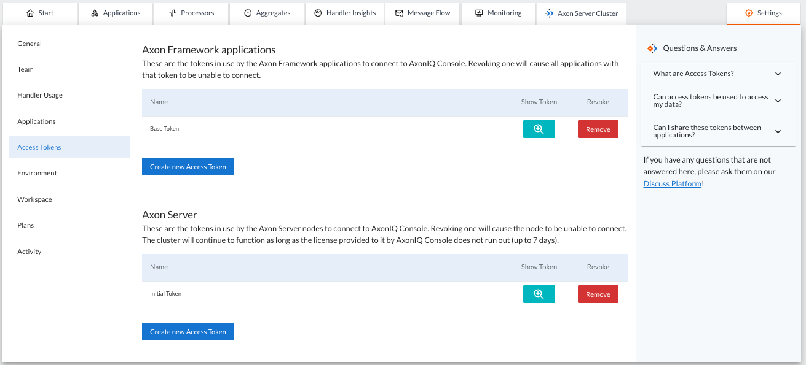

Access Tokens
Administrators have the capability to add and remove access tokens used by the Console, as shown in the image below. The "Access Token" section provides a list of the current Access Tokens that have been created with the option to configure or remove them entirely. The tokens should be set in the properties of applications or Axon Server nodes that want to connect with your Environment.

The tokens should be set in the properties of applications or Axon Server nodes that want to connect with your Environment. Hence, the Access Tokens page allows administrators to configure these.